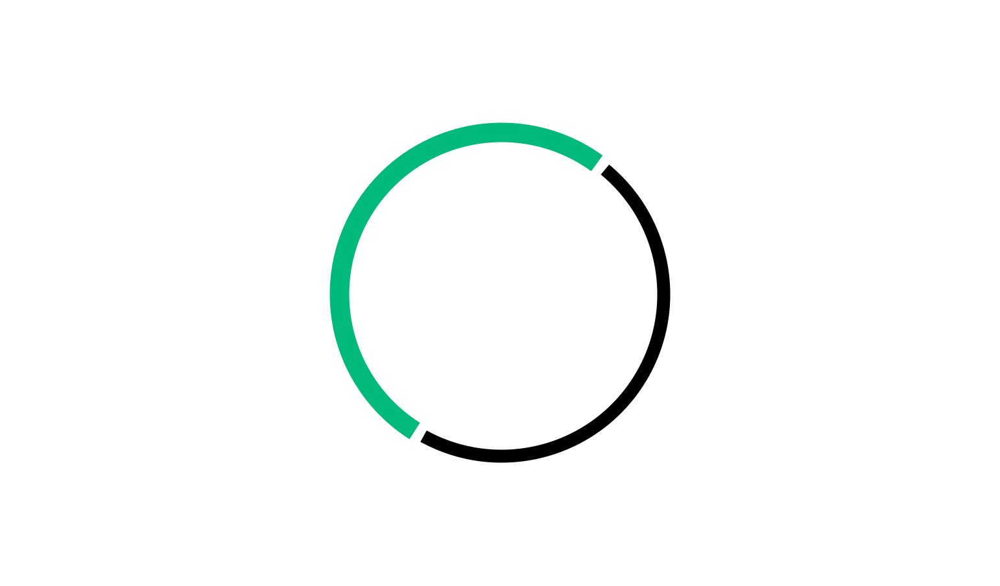
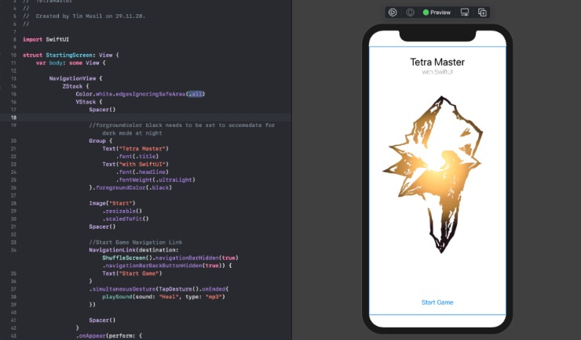
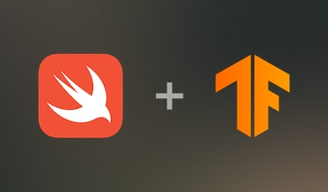

Personal Projects
Insights into different personal projects I worked on
-

sheyps
The app is published and already got updated with Face ID authentication. It is written in pure SwiftUI, based around CoreData and CloudKit, uses StoreKit 2, MapKit and many other great features. If you want to know more visit the accompanying website: sheyps.com.
-
100 Days of SwiftUI
I completed 100 Days of SwiftUI. A learning course by HACKING WITH SWIFT. During the course I built about 20 applications and learned a lot along the way! If you are interested check out the site 100 Days of SwiftUI. And my results in this repository.
-

Tetra Master with SwiftUI
Apple released SwiftUI as a new UI developing method for Apple devices at WWDC 2019. I wanted to get started with it and what better way to learn UI is there than to build a game. I chose to rebuild Tetra Master a Battle Card Game from Final Fantasy IX. One of my favorite games. You can see the outcome and the lessons I learned on the way here.
-

Swift for Tensorflow
During my Swift journey, I came across the fact that some of the newest developments on the TensorFlow framework are happening in Swift. As this is also relevant for my working environment I decided to take a deeper look. To follow my results and view my findings look here.
-
Explorations & Fundamentals
In June 2020 Apple released two books out of a 3 book series that is aimed at students and teachers for programming classes. I figured it to be a good starting point to look into the swift language and worked through both of the books. Although somewhat basic it gave me a good intro into Xcode and iOS development. For more information look here.